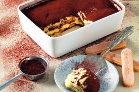

Tiramisù
Tiramisù is an italian dessert with uncertain origins

difficulty: easy
time: 40mins (+ 2h ca. bing chilling in fridge)
per serving: 670kcal
Ingredients
- 750g Mascarpone cheese
- 250g Savoiardi biscuits (or whatever long shaped dry biscuits you have)
- 5 medium eggs
- 120g sugar
- 300g coffee (sweetened if you wish)
- cocoa powder to add in the end if you wish (if you don't all of us italian will mamma mia'd your family)
Steps
- To make tiramisu prepare the coffee with a moka, sweeten it to taste and let cool in a small bowl
- Separate the eggs by dividing the egg whites from the yolks. The egg whites must not have any trace of yolk to whip it correctly
- Whip the yolks with electric whisks, slowly pouring only half a dose of sugar
- When the mixture is light and fluffy and with the whips still in operation slowly add mascarpone bit by bit
- Incorporate all mascarpone with the yolks until you have a thick and compact cream and then keep it aside
- Clean the whisks and whip the egg whites
- When they are foamy pour the remaining sugar little at a time. You have to whip them until they are a snowy and well firm mixture
- Mix little by little all egg whites into the bowl with the mascarpone cream, stirring very gently from bottom to top
- Spread a generous spoonful on the bottom of a glass baking dish, distributing it well throughout the base
- Soak the savoiardi for a few moments in cold coffee first on one side and then on the other
- Gradually distribute the savoiardi biscuits soaked in the baking dish, trying to arrange them all in one direction, so as to obtain a first layer of biscuits
- Add more mascarpone cream and level it to completely cover them
- Continue to distribute the ladyfingers soaked in coffee
- Make as many layers as you wish
- Sprinkle the last cream layer with cocoa powder
- let firm in the refrigerator for a couple of hours
homepage